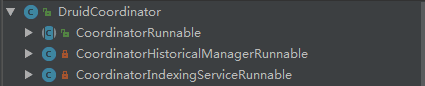
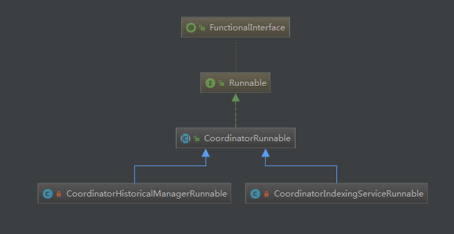
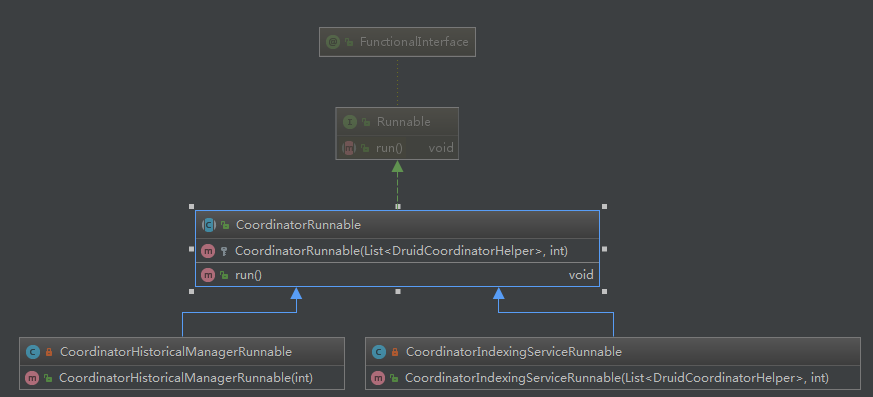

Druid Coordinator 服务在整个Druid架构中的主要作用是协调Segments在历史节点之间的分布。其主要功能包括是segments在historical之间分布均衡，rules管理，segments清理合并等等。
源码分析
Druid 版本: druid-0.12.3
DruidCoordinator
DruidCoordinator是Coordinator服务的入口，Coordinator启动的流程都是在这个类中开始。首先看一下它的内部类：

DruidCoordinator 一共有三个内部类，即使不看类的定义，我们从类名也可以知道这三个内部类都实现了Runnable接口。在Coordiantor服务中应该是作为三个独立的线程异步执行。
我们先大致了解一下每个Runnable的完成的工作。
CoordinatorRunnable
查看这个类的源码，除了一些判断结构之外，其最主要的实现如下：
1 | // Do coordinator stuff. |
在这里，CoordinatorRunnable首先组装出了一个原始的DruidCoordinatorRuntimeParams 对象(后用params代替)，遍历执行了helper中的run方法。这里是使用了装饰器模式，run方法返回的依然是一个params对象，只是对象又进行了一波加工。
查看helpers的定义，知道了这是一个List<DruidCoordinatorHelper>。该对象的初始化是通过构造器来完成的。想要明白helper做了什么，就需要找到这个类在什么地方被使用，对象是如何创建的。
查看类图，如下：
CoordinatorRunnable作为一个抽象类，在工程中并没有方法直接创建CoordinatorRunnable对象，也就是说他的run方法是通过子类调用的。有意思的是，CoordinatorRunnable被声明成一个抽象类，但是在它的类定义中并没有声明抽象方法。我的印象中，抽象类多用于模板方法模式。但是乍一看这个类并没有使用这一种模式，唯一一个没有确定的方法就是helper的run方法。也就是说，什么样的helper决定了run方法做了什么样的事。helper是通过构造器创建的，而CoordinatorRunnable并没有直接通过new关键字创建对象，那么其构造器应该只有子类调用。下面到子类中找helper的定义。
CoordinatorHistoricalManagerRunnable
这个类继承了CoordinatorRunnable抽象类，且只定义了一个有参构造器，就是这个构造器决定了父类的run方法还要做些什么事。
1 | super( |
在这个构造器中传入了一个装载DruidCoordinatorHelper的列表。这个列表中helper对象会在DruidCoordinator的run方法实现中被调用，运行每个helper的run方法。其父类方法的实现中部分步骤延伸至子类，由子类提供实践方式，其实用的还是模板方法。DruidCoordinatorHelper并没有继承任何的接口或者类。也就是说CoordinatorRunnable的是在单个线程中调用helper的run方法。
从这个helper中我们可以看出，这个CoordinatorHistoricalManagerRunnable主要是实现了segments负责均衡以及Rules管理，segments清理等功能。
CoordinatorIndexingServiceRunnable
作为CoordinatorRunnable的另外一个子类，它的类定义就简单很多了。
1 | public CoordinatorIndexingServiceRunnable(List<DruidCoordinatorHelper> helpers, final int startingLeaderCounter) |
这个类中helpers也是通过其构造器赋值的。但是原理是一样的，传什么样的helper就做什么样的事。
start()
该方法由Lifecycle进行管理，注解为@LifecycleStart。在Coordinator启动后首先会在同步代码快中判断是Coordinator服务是有已经启动过了(可能配置了HA)，如实没有启动则会去竞争leader。服务是否已经启动 是通过同步状态started来表示的。如果当前服务未启动，则将started置为true，然后就调用becomeLeader()方法来完成后续的操作。
1 | public void start() |
Coordiantor在宣布服务之前会先去对MetadataStorage中的一些元信息进行操作。
1 | //扫描segment |
SQLMetadataSegmentManager之start方法
在这个方法中，主要的实现是在这个类的poll()方法中，而poll()方法是通过单个线程调度的，调度方式为scheduleWithFixedDelay。通过这种方式调度就必须要等当前的线程工作执行完毕之后，才会在指定的间隔之后进行下一次调度。也就是说单个线程的执行时间对整个的调度周期有较大的影响。
这种方式有两个明显的目的:
1.当前线程的工作不会阻塞主线程的执行，即二者的操作是异步的；
2.线程的工作可以周期性的执行。
因为必须要等当前的线程执行完之后才会进行下一次调度，所以这个地方它创建了只有一个线程的线程池。
1 | //单个线程的线程池 |
SQLMetadataRuleManager之start方法
调度方式与前面的start()方法相似，只是poll()方法中扫描的数据不一样了。前者是更新segments，这里是更新rules。
完成上述两个操作之后，Coordinator开始宣布服务。
宣布服务成功之后，Coordiantor就开始真正执行对segment和历史节点的管理。首先，它创建了一个list，用来存放要干的事以及调度周期。
1 | final List<Pair<? extends CoordinatorRunnable, Duration>> coordinatorRunnables = Lists.newArrayList(); |
在list中Coordinator放入了CoordinatorRunnable的两个子类——CoordinatorHistoricalManagerRunnable和CoordinatorIndexingServiceRunnable。我们先了解一下这个list如何被使用。
1 | for (final Pair<? extends CoordinatorRunnable, Duration> coordinatorRunnable : coordinatorRunnables) { |
这里也是使用了scheduleWithFixedDelay调度，也就是说每个CoordinatorRunnable都是要等上一次执行结束之后才会进行下一次的调度。而且这里需要注意到是调度方法中的exec变量是一个容量为1的线程池。也就是说这里的调度相当于从主线程又单独创建一个线程来执行这些CoordinatorRunnable。这里采用单个线程池的线程进行调度一是为了保证主线程不会阻塞，另外是为确保数据操作的安全性。
至此我们知道了，Coordinator在启动的时候会先尝试去竞争主节点资格，然后扫描元数据库，这里是异步的。接着会宣布服务。服务宣布后他会去将一些工作封装成CoordinatorRunnable,由另外一个线程去周期性的调度执行这些Runnable的run方法。而这里使用模板方法，在父类的run方法中会调用helper的run方法，而helper是通过子类来确定。
所以，为了探究Coordinator接下来会做什么，我们就需要确认在创建其子类对象是，helper是如何实现的。

查看CoordinatorHistoricalManagerRunnable的构造器实现：
1 | public CoordinatorHistoricalManagerRunnable(final int startingLeaderCounter) |
查看源码易知，这里实际上是创建了7个DruidCoordinatorHelper，我们可以理解成，Coordinator接下来会串行地完成这七件事。这里为了代码的易读性和整洁度，可以把这个匿名内部类拎出来单独实现一下。CoordinatorHistoricalManagerRunnable中完成的工作基本上是与segments管理及历史节点负载均衡相关的。具体的实现可以查看每个Runnable的run方法。
关于CoordinatorIndexingServiceRunnable,我们前面说过，它的helpers是通过调用方传入参数决定的。
1 | if (indexingServiceClient != null) { |
实际上是传入了两个helper,一个是DruidCoordinatorSegmentInfoLoader,用来加载segments信息。另一个是indexingServiceHelpers，负责完成segment的一些合并工作。
最后调用LookupCoordinatorManager的start()方法，这里暂时先不讨论。
现在的问题是，列表中的CoordinatorRunnable是通过单个线程来进行调度的，而且helpers也是通过串行的方式实现的。那么，如果单次调度时间过长的话，则会导致很长时间后才会进行下一次的调度。
这里我们考虑一下，Druid为什么会选择使用只有一个线程资源的线程池来调度所有的CoordinatorRunnable。
在单个线程中他们实际上是串行的。串行的好处是，在进程中变量对于内存的可见性得到了保证，坏处是执行效率差。
如果需要对这里进行改造，串行改并行，我们首先要确定的就是共享内存中的变量有哪些，对共享变量的操作有哪些。
首先查看父类的run方法，再查看run方法调用的各个helper。细看代码我们不难发现，这里其实就是一个装饰器模式。每个help的run方法都会对params对象进行读写，且大部分都是读操作，只有在返回的时候进行了写操作。
备注：把匿名内部类抽出来，单独实现，然后再作为参数传递，会让代码看起来整洁很多，如下：
更改前：
1 | public CoordinatorHistoricalManagerRunnable(final int startingLeaderCounter) |
更改后：
1 | public CoordinatorHistoricalManagerRunnable(final int startingLeaderCounter) |